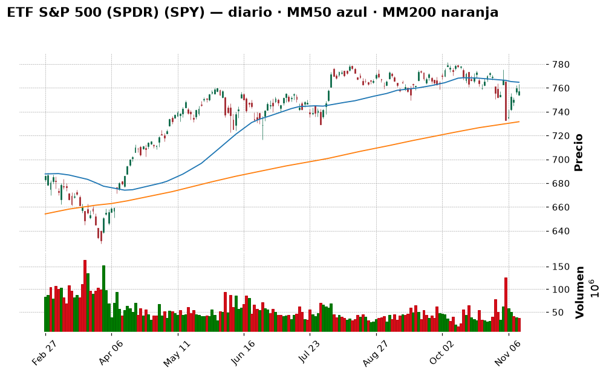
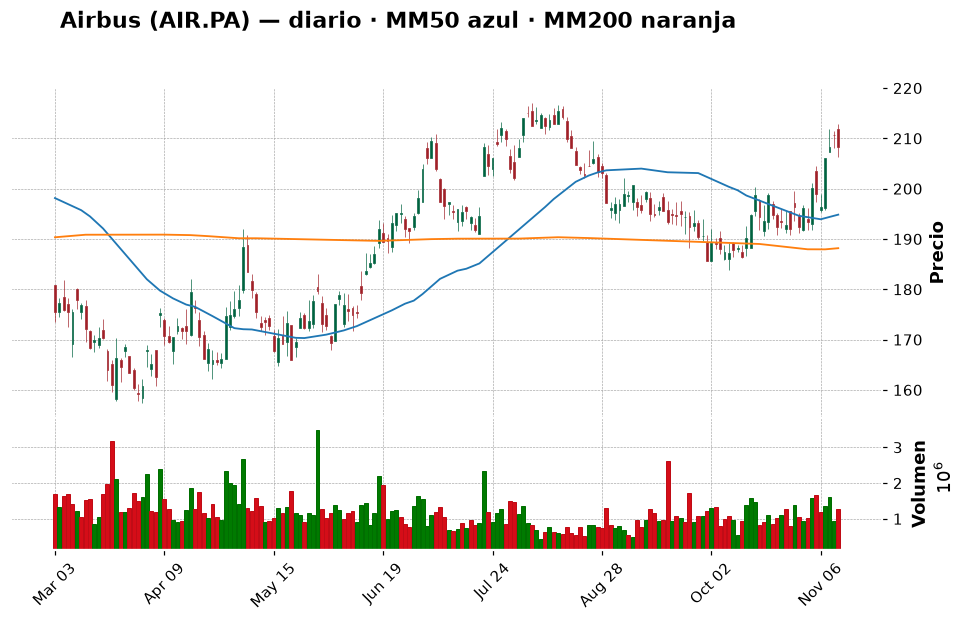
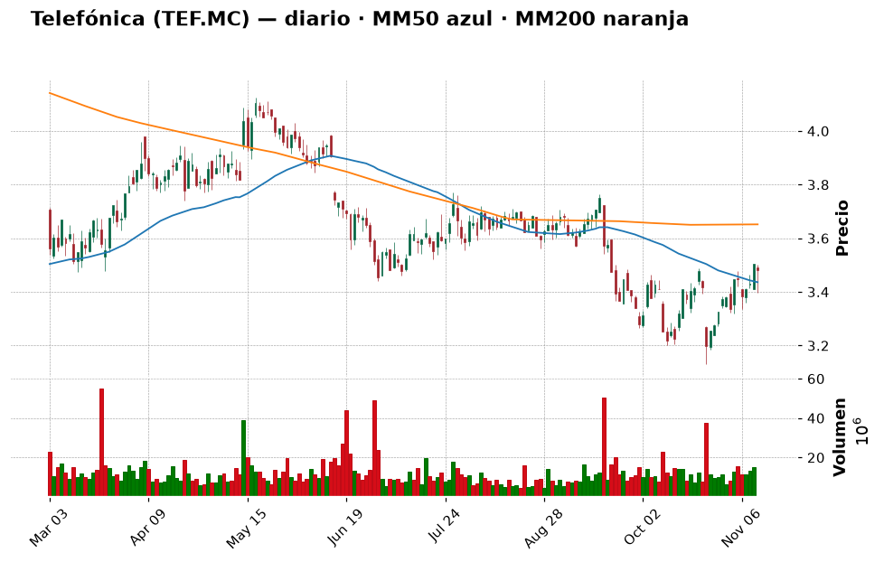
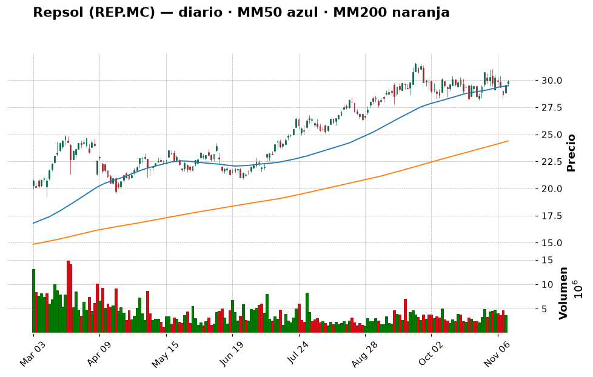
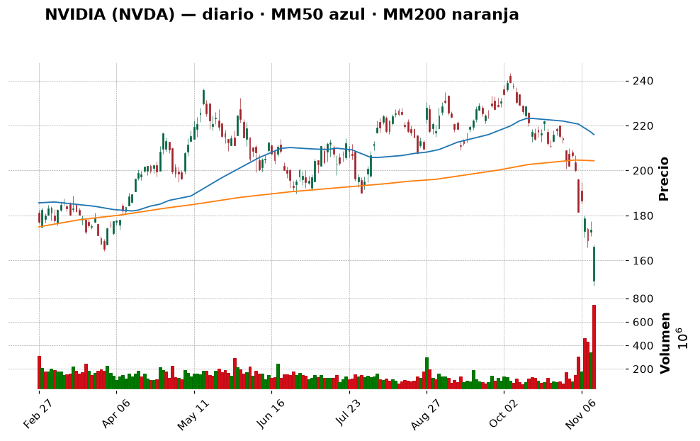
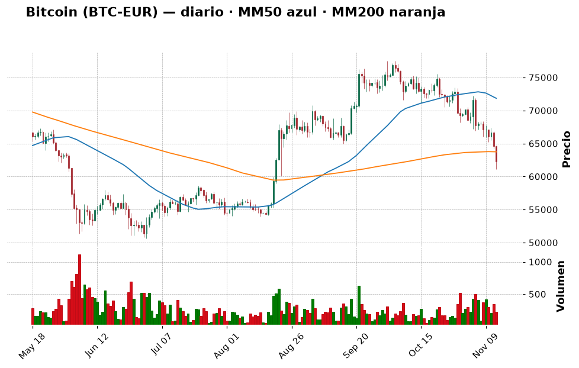
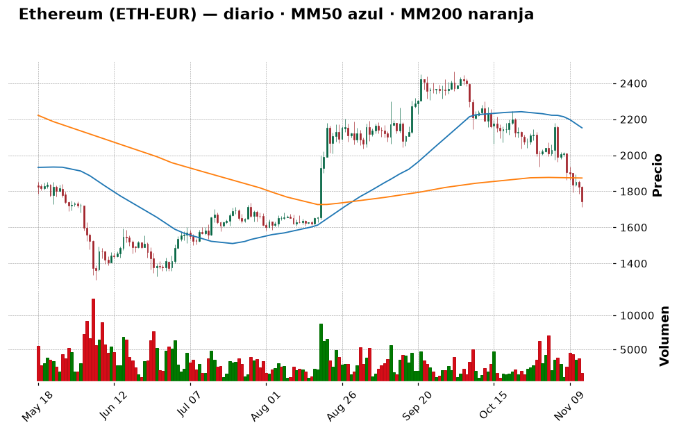

📈 Informe pre-apertura — viernes 13 de noviembre de 2026
Generado automáticamente a las 07:50 (hora de Madrid) · Bolsa española abre a las 9:00 · Wall Street a las 15:30 · Cripto: 24/7
Termómetro del día: 🟡 prudencia — La bolsa ha encajado bien la salida de Jensen Huang de Nvidia (el S&P 500 solo cayó un −0,35 %), pero el bono de EE. UU. a 10 años ha dado su mayor salto desde 2022 y ya paga un 5,1 %, el dólar está en máximos de 19 meses y el mercado cripto está en miedo extremo (20/100). Día para no mover ficha y vigilar dos niveles.
Lección de hoy: La media móvil de 200 sesiones (MM200)
1. Lo que tienes que saber hoy
- Nvidia ya tiene CEO interina. Jensen Huang, fundador y consejero delegado durante tres décadas, dimitió el jueves y deja también el consejo; la directora financiera Colette Kress dirige la empresa de forma interina mientras se busca un sustituto (Investing.com, Decrypt). La acción llegó a caer un −14 % en la sesión (mínimo de 148,80 $), pero cerró con un −4,34 % (166,19 $): el mercado ya había descontado gran parte del golpe. Los analistas recortan sus precios objetivo, aunque "descartan cambios en los fundamentales" (Cinco Días).
- El problema de hoy no es Nvidia: son los tipos de interés. El bono de EE. UU. a 10 años subió +11,6 puntos básicos hasta el 5,105 % y el de 2 años +14 pb hasta el 4,867 % (Investing.com/Reuters). MarketWatch habla del mayor salto de rentabilidades desde 2022: el mercado ya descuenta una subida de tipos de la Fed en diciembre y algunos miembros (Waller) hablan incluso de 0,50 puntos (CoinDesk). Hoy a las 14:30 se publican los precios industriales (IPP) de EE. UU.: si salen altos, más presión.
- Bitcoin pierde los 70.000 $ y cae a 62.243 € (−3,7 % hoy, −8,4 % en una semana), su nivel más bajo desde agosto. El índice de miedo y codicia baja a 20 (miedo extremo), el más bajo en más de cuatro meses (Cointelegraph). Lo importante para ti: bitcoin está ahora un −2,35 % por debajo de su media de 200 días, justo el nivel que ayer dijimos que nos haría pausar el próximo tramo. Hoy aprendemos qué es esa media.
- Tu cartera: sin movimientos nuevos desde ayer (correcto: no tocaba hacer nada). Patrimonio de 9.722,55 €, con el 93 % en liquidez. El plan sigue igual para todo salvo bitcoin, cuyo siguiente tramo queda en pausa condicional (ver sección 7).
2. ✅ Recomendaciones del día (resumen)
| Activo | Acción | vs. ayer | Cuánto (orientativo) | Horizonte | Por qué, en una frase | Confianza |
|---|---|---|---|---|---|---|
| ETF S&P 500 (SPY / SPY5.L) | Mantener | = | Tramo 1 hecho (~319 €); tramo 2 (~600 €) hacia el 1-dic, o antes si el SPY cae a 729–739 $ | Años (5+) | El índice ha aguantado el golpe de Nvidia; el riesgo ahora es el bono al 5,1 %, y para eso están los tramos | media |
| Airbus (AIR.PA) | Esperar | = | Hasta 3–4 % (~300–400 €) en 2 tramos, si vuelve a ~202 € o cierra sobre 217 € | Años | Chocó contra su "pared" de 211 € y retrocedió a 208,25 €: el rechazo que temíamos | media |
| Telefónica (TEF.MC) | Esperar | = | 0 € hoy; hasta 2–3 % (~250 €) si supera 3,71 € | Años | Resultados mejores de lo esperado, pero la bolsa respondió con un −0,7 %: aún sin confirmación | baja |
| Repsol (REP.MC) | Mantener | = | No añadir | Años | Ganas un +142 %; el Brent sube a 96 $ y la tendencia sigue alcista | media |
| NVIDIA (NVDA) | Evitar | = (confianza alta → media) | 0 € | — | Ya hay CEO interina, pero no permanente, y crecen las restricciones de chips a China | media |
| Iberdrola (IBE.MC) | Esperar | = | Hasta 5 % (~480 €) si retrocede a 21–22 € | Años | Nuevo máximo (23,34 €) y RSI 79,5: cada día más "caliente" | media |
| Inditex (ITX.MC) | Mantener | = | No añadir | Años | +122 % en tu posición, tendencia alcista intacta | media |
| Apple (AAPL) | Mantener | = | No añadir | Años | A un paso de máximos (354,88 $), tendencia alcista sana | media |
| Bitcoin (BTC) | Mantener | = | No vender; tramo de diciembre en pausa si hoy cierra por debajo de ~63.740 € | Años | Ha perdido su MM200 durante la noche: la regla que fijamos ayer se activa si se confirma al cierre | media |
| Ether (ETH) | Esperar | = | 0 € hoy | Años | Se aleja de su MM200 (−6,8 %) y se acerca al soporte de ~1.600 € | media |
| Shiba Inu (SHIB) | Evitar | = | No añadir | — | Memecoin, −52 % en un año | alta |
(El resto de la watchlist —Santander, BBVA, Solaria, Oryzon, IAG, Indra, Aena, Microsoft, Amazon, Alphabet, Berkshire, los ETF del Nasdaq y del MSCI World, ASML, LVMH, SAP y Siemens— tiene su veredicto en la tabla "Resto de la watchlist" de la sección 6.)
🔁 Seguimiento de ayer (informe del 12-nov):
- ETF S&P 500: Mantener, con tramo 2 hacia el 1-dic o antes si el SPY caía a 729–739 $ → el SPY cerró en 757,12 $ (−0,35 %), lejos de esa zona. Tu tramo (SPY5.L) gana un +0,79 %. Sin cambios. Y la lección de diversificación de ayer se cumplió al pie de la letra: Nvidia −4,3 %, S&P 500 −0,35 %.
- Nvidia: Evitar → se cumplió el escenario "malo" (Huang fuera), pero sin el hundimiento del −20 % que algunos temían: rebotó desde el −14 % y cerró en −4,3 %. Mantengo Evitar, pero bajo la confianza de alta a media: lo que cambia es que la incertidumbre más extrema (¿quién manda?) se ha resuelto a medias con una CEO interina. Sigue sin cumplirse lo que me haría cambiar de opinión (CEO permanente y precio sobre su MM200 de ~204 $).
- Airbus: Esperar a ~202 € o a un cierre sobre 217 € → subió hasta la resistencia de 211 € y retrocedió a 208,25 € (−1,2 %). Es el "rechazo" del que hablábamos. Seguimos esperando con los mismos niveles.
- Telefónica: Esperar a que supere 3,71 € tras resultados → resultados mejores de lo previsto (ver sección 6), pero cerró en 3,48 € (−0,7 %). Ni rotura ni hundimiento: seguimos esperando.
- Bitcoin: dijimos "si cierra claramente por debajo de la MM200 (~63.800 €), pausaría el tramo de diciembre". La vela del jueves en Coinbase cerró en 64.614 € (aún por encima), pero esta noche ha caído a 62.243 €, un −2,35 % por debajo. Si la vela de hoy cierra así, la regla se activa: no vendemos, pero el tramo del 1-dic queda en pausa.
- Tu cartera.csv: sin movimientos nuevos desde el 11-nov. Correcto: el plan de ayer era no hacer nada.
Día para no hacer movimientos: el plan en tramos está funcionando y nada de lo ocurrido lo invalida en bolsa. La única novedad es que bitcoin está a punto de activar la señal de pausa que nos pusimos ayer: respetar tus propias reglas es lo que diferencia un plan de una corazonada.
3. Agenda del día
| Hora (Madrid) | Evento | Por qué importa |
|---|---|---|
| 8:45 | IPC de Francia (octubre, dato final) (Reuters vía Investing.com) | Pista de inflación en la zona euro, que pesa en lo que haga el BCE |
| 9:00 | Apertura de la Bolsa española (futuros del Ibex en 19.961,5, prácticamente planos) | ¿Intenta el Ibex volver a los 20.000? |
| 11:00 | PIB de la zona euro (3.er trimestre, avance) y empleo (Reuters vía Investing.com) | Dice si la economía europea crece; con tipos altos, se vigila si se frena |
| 14:30 | IPP (precios industriales) de EE. UU., octubre. Previsión: +0,4 % mensual frente a +1,3 % del mes anterior (Investing.com) | Segunda pista de inflación de la semana tras el IPC "caliente". Un dato alto reforzaría la subida de tipos de la Fed en diciembre |
| 15:30 | Apertura de Wall Street | Se verá si el bono al 5,1 % pesa más que el alivio por Nvidia |
| Durante el día | Discursos de miembros de la Fed (Reuters) · noticias sobre el sucesor de Huang y las restricciones de chips a China | Cualquiera puede mover la tecnología y los bonos |
| Dom 29-nov | Elecciones generales en España | Ruido político durante el mes |
| 30-nov | Salida de Strategy de los índices MSCI | Ventas forzadas de acciones de la mayor "tesorería de bitcoin" |
| 1-dic | Tu aportación de 200 € | Fecha prevista del tramo 2 del ETF |
| 9-dic | Reunión de la Fed (Investing.com) | Se decide la subida de tipos que el mercado ya da por hecha |
Nota: las búsquedas web de calendario económico no devolvieron un calendario fiable para hoy; la agenda sale del "Morning Bid" de Reuters y de Investing.com España. Investing.com da para el IPP la hora "15:30 peninsular (13:30 UTC)", lo que es contradictorio; 13:30 UTC son las 14:30 en Madrid.
4. Cómo llegan los mercados
España y Europa
Ayer (jueves 12): el Ibex 35 cerró en 19.965,5 puntos (−0,31 %) y volvió a perder los 20.000, sobre todo por la banca: Santander −1,88 % (11,08 €). En verde, Naturgy (+2,47 %), Ferrovial (+1,21 %) y Repsol (+1,15 %, 29,90 €), empujada por el petróleo (Investing.com España). Los futuros apuntan a una apertura plana (19.961,5). El Euro Stoxx 50 subió un +0,09 % (6.398,98) y el Stoxx 600 llegó a marcar un máximo histórico intradía (666,58) antes de cerrar en 664,01 (+0,14 %) (Reuters vía Investing.com). Europa sigue más fuerte que EE. UU.
Noticias de empresas y Europa:
- Telefónica presentó resultados del tercer trimestre mejores de lo previsto: beneficio atribuido de 802 millones (+191 %) frente a 538 millones esperados, ingresos de 8.430 millones (+4,8 %) y ebitda ajustado de 3.080 millones (+6,2 %). Mejora sus previsiones de ebitda (ligeramente por encima del 2,5 %) y de caja libre (~3.100 millones), pero recorta la de ingresos (1–1,5 %) por menores ventas de móviles (Reuters vía Yahoo Finance). La acción, sin embargo, cayó un −0,71 %.
- BCE: Alemania y Francia ultiman un reparto de puestos con el español Pablo Hernández de Cos como favorito para relevar a Lagarde (Europa Press). 💡 El presidente del BCE marca el tono de los tipos de interés de toda la zona euro; un cambio de presidente puede cambiar, poco a poco, esa política.
- IAG: Deutsche Bank recorta su precio objetivo a 600 peniques por el encarecimiento del combustible (Proactive Investors).
- Siemens presentó resultados con pedidos récord y comprará la alemana Lauterbach (herramientas para chips) (Yahoo Finance, Verdict): subió un +1,7 %.
- Banca española: CaixaBank reduce hasta seis veces su crecimiento hipotecario y Sabadell reordena su negocio de pagos (Expansión, titulares RSS).
- Política: veinte grandes empresas piden al próximo Gobierno un plan económico tras el 29-N (Expansión, titular RSS).
Estados Unidos
Ayer: el S&P 500 cerró en 7.592,40 (−0,35 %), el Nasdaq en 25.366,09 (−0,39 %) y el Dow Jones en 52.297,09 (−0,36 %) (Reuters vía Investing.com). Teniendo en cuenta que la mayor empresa de la IA perdió a su fundador, es una caída muy pequeña: MarketWatch titula que "el S&P 500 se sacude la venta de Nvidia". Parte del dinero fue a sus rivales: AMD +5,9 % y Broadcom +5,5 %. En cambio, Nebius se hundió un −17 % tras rebajar previsiones (Motley Fool) y Cisco cayó pese a batir expectativas (Stocktwits). Las tecnológicas chinas caen por miedo a nuevas restricciones de chips: el presidente de la Cámara de Representantes dice que hay "consenso" en el Congreso para limitar exportaciones a China (Reuters vía Investing.com).
Esta mañana: los futuros del S&P 500 caen un −0,15 % (7.603,75) y los del Nasdaq 100 un −0,28 % (28.305,25) (Yahoo Finance, 7:37 h de Madrid). El VIX (índice del "miedo" de la bolsa) sube un +6,9 %, hasta 18,7: nervios, pero lejos del pánico. 💡 El VIX mide cuánta volatilidad esperan los inversores en el S&P 500 para el próximo mes; por debajo de 20 se considera calma relativa, por encima de 30, miedo.
Macro (tipos de interés, inflación, divisas, materias primas)
- Bonos de EE. UU.: el de 10 años sube al 5,105 % (máximo desde el 21 de octubre; esta mañana 5,13 %) y el de 2 años al 4,867 %. Los futuros de la Fed descuentan 29 puntos básicos de subida en diciembre (Reuters vía Investing.com). John Williams (Fed de Nueva York) dice que la Fed "tiene trabajo por hacer" para bajar la inflación. 💡 Un punto básico es una centésima de punto porcentual: subir del 5,00 % al 5,10 % son 10 puntos básicos. Un artículo de 24/7 Wall St. recuerda que los bonos ya pagan más de lo que "rinden" las acciones (beneficios entre precio), una diferencia no vista desde 2009: es el gran argumento de los que creen que la bolsa está cara.
- Dólar: el índice del dólar está en máximos de 19 meses (103,18) y camino de su mejor semana en dos meses (Reuters). El euro/dólar está en 1,1061, prácticamente en su mínimo de 52 semanas (1,1051) (Yahoo Finance). Para ti: tus 2.605,43 USDC valen hoy 2.355,57 €.
- Yen: ha tocado los 160 por dólar y el Gobierno japonés amenaza con intervenir (Reuters). Si Japón actúa, puede haber movimientos bruscos en todas las bolsas.
- Petróleo Brent: 96,25 $ (+0,45 %) esta mañana, tras subir ayer un +3,3 % (95,82 $) cuando Trump dijo que EE. UU. "no necesita un acuerdo con Irán" (Reuters vía Investing.com, Yahoo Finance). Petróleo más caro = más inflación = más presión para subir tipos. Bien para Repsol, mal para aerolíneas como IAG.
- Oro: cayó un −2,8 % ayer (3.877 $), y rebota hoy ligeramente (~3.900 $) (Investing.com).
- España: el bono a 10 años paga un 3,905 % y la prima de riesgo está en 65 puntos básicos (Investing.com España). 💡 La prima de riesgo es lo que España paga de más que Alemania por endeudarse a 10 años; 65 pb es un nivel bajo, señal de confianza en la deuda española.
5. Panorama técnico de la watchlist
💡 Cómo leer esta tabla: la tendencia resume si el precio lleva meses subiendo, bajando o de lado
(comparando el precio con sus medias de 50 y 200 días). El RSI mide de 0 a 100 si las subidas o bajadas
recientes han sido muy fuertes: por encima de 70 se dice "sobrecompra" (quizá ha subido demasiado rápido),
por debajo de 30 "sobreventa". Son pistas, no predicciones.
Todos los datos son del cierre del jueves 12-nov (ningún valor llega con retraso hoy ✅). La watchlist ha crecido: hoy aparecen por primera vez IAG, Indra, Aena, Alphabet, Berkshire, el ETF MSCI World, ASML, LVMH, SAP y Siemens.
| Valor | Último cierre | Día | 1 mes | 1 año | Tendencia | RSI | vs MM200 |
|---|---|---|---|---|---|---|---|
| IBEX 35 (^IBEX) | 19.965,5 | −0,31 % | +3,82 % | +23,45 % | ➡️ lateral | 62,6 🟡 | +6,4 % |
| Euro Stoxx 50 (^STOXX50E) | 6.398,98 | +0,09 % | +3,37 % | +12,97 % | ➡️ lateral | 62,3 🟡 | +4,5 % |
| S&P 500 (^GSPC) | 7.592,40 | −0,35 % | −1,64 % | +10,89 % | ➡️ lateral | 48,4 🟡 | +3,5 % |
| Nasdaq Composite (^IXIC) | 25.366,09 | −0,39 % | −4,97 % | +8,09 % | ➡️ lateral | 44,6 🟡 | +0,9 % |
| Banco Santander (SAN.MC) | 11,08 € | −1,88 % | −8,64 % | +21,78 % | ➡️ lateral | 46,1 🟡 | −1,8 % |
| BBVA (BBVA.MC) | 23,53 € | −0,34 % | +1,73 % | +29,93 % | ➡️ lateral | 55,8 🟡 | +9,2 % |
| Inditex (ITX.MC) | 59,68 € | −0,67 % | +9,83 % | +26,84 % | 📈 alcista | 63,3 🟡 | +9,3 % |
| Iberdrola (IBE.MC) | 23,34 € | +0,60 % | +7,51 % | +28,63 % | 📈 alcista | 79,5 🔴 | +14,4 % |
| Telefónica (TEF.MC) | 3,48 € | −0,71 % | +7,94 % | −6,70 % | ➡️ lateral | 55,8 🟡 | −4,7 % |
| Repsol (REP.MC) | 29,90 € | +1,15 % | −0,60 % | +76,51 % | 📈 alcista | 52,8 🟡 | +22,6 % |
| Solaria (SLR.MC) | 16,36 € | −1,48 % | +4,14 % | −8,94 % | ➡️ lateral | 54,7 🟡 | −16,4 % |
| Oryzon (ORY.MC) | 2,58 € | +4,12 % | +0,16 % | −16,63 % | 📉 bajista | 56,2 🟡 | −9,9 % |
| IAG (IAG.MC) | 5,41 € | −1,39 % | +10,91 % | +24,90 % | 📈 alcista | 63,8 🟡 | +11,1 % |
| Indra (IDR.MC) | 58,20 € | −2,48 % | −6,97 % | +16,17 % | ➡️ lateral | 42,5 🟡 | +4,3 % |
| Aena (AENA.MC) | 28,74 € | +0,56 % | +13,96 % | +25,72 % | 📈 alcista | 71,5 🔴 | +10,5 % |
| Apple (AAPL) | 354,88 $ | −0,21 % | +3,48 % | +28,93 % | 📈 alcista | 59,7 🟡 | +18,0 % |
| Microsoft (MSFT) | 523,00 $ | +0,36 % | −2,00 % | +2,82 % | 📈 alcista | 48,4 🟡 | +18,6 % |
| NVIDIA (NVDA) | 166,19 $ | −4,34 % | −24,90 % | −13,96 % | ➡️ lateral | 26,0 🟢 | −18,7 % |
| Amazon (AMZN) | 267,44 $ | +0,48 % | +5,26 % | +7,36 % | ➡️ lateral | 58,2 🟡 | +9,4 % |
| ETF S&P 500 (SPY) | 757,12 $ | −0,35 % | −1,62 % | +10,85 % | ➡️ lateral | 48,5 🟡 | +3,5 % |
| ETF Nasdaq 100 (QQQ) | 688,17 $ | −0,32 % | −5,59 % | +10,71 % | ➡️ lateral | 45,4 🟡 | +0,9 % |
| Alphabet (GOOGL) | 298,70 $ | +1,79 % | −14,08 % | +2,54 % | 📉 bajista | 42,3 🟡 | −11,8 % |
| Berkshire Hathaway (BRK-B) | 589,83 $ | +0,27 % | +12,06 % | +18,66 % | 📈 alcista | 80,0 🔴 | +18,0 % |
| ETF MSCI World (IWDA.AS) | 131,60 € | +0,50 % | −0,16 % | +19,42 % | 📈 alcista | 57,6 🟡 | +7,7 % |
| Airbus (AIR.PA) | 208,25 € | −1,16 % | +9,48 % | +0,46 % | ➡️ lateral | 63,0 🟡 | +10,7 % |
| ASML (ASML.AS) | 1.376,80 € | −1,92 % | −9,91 % | +57,10 % | ➡️ lateral | 44,8 🟡 | −1,5 % |
| LVMH (MC.PA) | 404,70 € | +0,40 % | +3,89 % | −35,14 % | ➡️ lateral | 55,0 🟡 | −12,5 % |
| SAP (SAP.DE) | 212,55 € | +0,76 % | +7,93 % | −2,54 % | 📈 alcista | 60,6 🟡 | +27,8 % |
| Siemens (SIE.DE) | 281,70 € | +1,70 % | +2,42 % | +24,10 % | ➡️ lateral | 59,1 🟡 | +8,3 % |
(🟢 = RSI bajo, posible "rebajas"; 🔴 = RSI alto, quizá demasiado rápido; 🟡 = neutral.)
En conjunto: la foto de "dos velocidades" sigue igual. Europa está en forma: el Ibex está un +6,4 % sobre su MM200 y casi todas las grandes españolas y europeas están por encima de esa media. EE. UU. sigue "de lado": el S&P 500 está por encima de su MM200 (+3,5 %) pero por debajo de su MM50 (−1,0 %), y el Nasdaq casi pegado a la MM200 (+0,9 %). Lo más "estirado": Berkshire (RSI 80), Iberdrola (79,5) y Aena (71,5). Lo más castigado: Nvidia (RSI 26) y Alphabet, que acaba de hacer un "cruce de la muerte" (su MM50 ha bajado por debajo de su MM200, una señal clásica de debilidad de fondo). Fíjate en la última columna: hoy aprenderás por qué la "vs MM200" es probablemente la columna más útil de la tabla.
6. Ideas de bolsa: qué haría un experto
ETF S&P 500 (SPY5.L / SPY)Mantener(tramo 1 hecho)

- Qué es: un fondo que compra de una vez las ~500 mayores empresas de EE. UU. Tú tienes la versión europea (UCITS) que cotiza en Londres, SPY5.L; el gráfico es del SPY estadounidense, que sigue el mismo índice.
- Por qué es noticia hoy: ha superado la "prueba Nvidia": con la mayor empresa de la IA sin su fundador, el índice solo cayó un −0,35 %. El nuevo riesgo es el bono al 5,1 %: cuando el "dinero seguro" paga tanto, las acciones pierden atractivo (24/7 Wall St., MarketWatch).
- Lo que dice el gráfico: el SPY (757,12 $) sigue en "tierra de nadie": por encima de su MM200 (731,62 $; +3,5 %) y justo por debajo de su MM50 (764,80 $). RSI 48,5 (neutral) y MACD "mejorando". Soportes en 749,6 $ y 739,5 $; resistencia cercana en 760,4 $. A un −3,1 % de su máximo de 52 semanas (781,62 $). En llano: la tendencia de fondo está intacta; la línea gruesa de la MM200 sigue siendo el suelo.
- Lo positivo: es tu núcleo diversificado y barato, y ya tienes el primer tramo (gana un +0,79 %).
- El riesgo: si el IPP de hoy sale alto y el bono sube hacia el 5,25–5,5 %, el índice podría bajar a la zona de 739 $ o incluso a su MM200.
- 🧑💼 Recomendación: MANTENER. Nada ha cambiado: el plan es comprar en tramos para no tener que adivinar el día. Si el bono provoca una caída hacia 729–739 $, eso adelanta el tramo 2; no lo retrasa.
- Cuánto y cómo: tramo 2 de ~600 € (≈6 % de tu patrimonio) hacia el 1 de diciembre, o antes si el SPY cae a 729–739 $. Objetivo: ~35 % del patrimonio en 6 tramos.
- Horizonte: 5 años o más.
- Qué me haría cambiar de opinión: un cierre semanal por debajo de 729 $ (es decir, por debajo de la MM200): no vendería lo comprado, pero pausaría el siguiente tramo hasta ver estabilidad.
- Qué mirar para entenderlo: el bono a 10 años de EE. UU. Si se queda en torno al 5 %, normal; si pasa del 5,25 %, espera turbulencias.
- Confianza: media
Airbus (AIR.PA)Esperar(sigue en tu lista de la compra)

- Qué es: el mayor fabricante de aviones comerciales del mundo (europeo, con fábricas en Francia, Alemania y España), además de helicópteros, defensa y espacio.
- Por qué es noticia hoy: sin noticias grandes. Llama la atención por sus avances en enjambres de drones con IA para defensa (Simply Wall St. vía Yahoo Finance). El dato de fondo sigue siendo el objetivo de ~870 entregas en 2026: llevaba 547 hasta septiembre, así que necesita acelerar en el último trimestre (AirNav Radar, El Demócrata). Ojo al petróleo caro: no afecta directamente a Airbus, pero sí a sus clientes (aerolíneas como IAG, a la que Deutsche Bank recorta objetivo por el combustible).
- Lo que dice el gráfico: 208,25 € (−1,2 % ayer). Por encima de sus medias (MM50 194,84 €, MM200 188,17 €; +10,7 %), RSI 63 (neutral alto) y MACD que pasa de "mejorando" a "empeorando": el impulso se frena. La clave: subió hasta la resistencia de 210,95 € y se dio la vuelta. Por encima, otra "pared" en 216,5–217 € y el máximo anual en 221,3 € (a un −5,9 %). Soporte cercano: 201,65 €.
- Lo positivo: cartera de pedidos enorme, ventaja sobre Boeing y viento de cola por el gasto en defensa europeo.
- El riesgo: no llegar a las 870 entregas por los proveedores (motores); y un mercado más nervioso por los tipos.
- 🧑💼 Recomendación: ESPERAR. Mantengo exactamente el plan: compraría (a) en un retroceso hacia ~202 € (soporte) o (b) con un cierre claro por encima de 217 € (pared rota). Ayer se vio el "rechazo" en la resistencia: es justo el motivo por el que no compramos a 210 €.
- Cuánto y cómo: hasta 3–4 % del patrimonio (~300–400 €), en 2 tramos.
- Horizonte: años.
- Qué me haría cambiar de opinión: un cierre por debajo de 190 € (zona de la MM200) o un recorte del objetivo de entregas.
- Qué mirar para entenderlo: las entregas de noviembre (se publican a primeros de diciembre) y si el precio se acerca a 202 €.
- Confianza: media
Telefónica (TEF.MC)Esperar

- Qué es: la mayor operadora de telecomunicaciones de España (Movistar), con negocio en Alemania, Reino Unido y Brasil. Paga dividendo.
- Por qué es noticia hoy: sus resultados del tercer trimestre batieron las previsiones: beneficio de 802 millones frente a 538 esperados, ingresos +4,8 %, ebitda ajustado +6,2 % (España +2,6 %, Brasil +9,7 %, Alemania −9,9 %). Mejora sus objetivos de ebitda y de caja libre (~3.100 millones) y rebaja el de ingresos (1–1,5 %) (Reuters vía Yahoo Finance). Parte del beneficio viene de algo puntual: 107 millones por la venta de su sede de Gran Vía.
- Lo que dice el gráfico: 3,48 € (−0,7 %). Sobre su MM50 (3,44 €) pero aún un −4,7 % por debajo de su MM200 (3,65 €). La vela de ayer: abrió en 3,49 €, bajó hasta 3,40 € y remontó hasta cerrar en 3,48 €, cerca del máximo del día. Es una reacción tibia: los vendedores aparecieron pronto, pero los compradores defendieron la zona de 3,40 €. Resistencias en 3,49 € y 3,71 €; soportes en 3,46 € y 3,44 €. RSI 55,8 (neutral), MACD "empeorando".
- Lo positivo: más caja y menos deuda; con el dividendo de 0,15 €, la rentabilidad por dividendo ronda el 4,3 % (mi cálculo: 0,15 / 3,48).
- El riesgo: que los ingresos no crezcan (por eso rebajan esa previsión), la debilidad de Alemania y que parte del beneficio sea extraordinario (la venta de la sede).
- 🧑💼 Recomendación: ESPERAR. Igual que ayer. Los números son buenos, pero el mercado no los ha "comprado" todavía. Esperaría a que el precio supere 3,71 € y su MM200 (3,65 €): sería la señal de que la tendencia de fondo ha cambiado de verdad.
- Cuánto y cómo: 0 € hoy; si se cumple la condición, hasta 2–3 % del patrimonio (~250 €) en 2 tramos.
- Horizonte: años (idea de dividendo, no de crecimiento).
- Qué me haría cambiar de opinión: un cierre por debajo de 3,27 € (soporte) me devolvería a Evitar.
- Qué mirar para entenderlo: la distancia a la MM200 (−4,7 % hoy). Si se reduce a cero y la supera, es la confirmación que buscamos.
- Confianza: baja
Repsol (REP.MC)Mantener(la tienes)

- Qué es: la petrolera española (extracción, refino, gasolineras y renovables).
- Por qué es noticia hoy: el Brent subió un +3,3 % ayer (95,82 $) y sigue subiendo esta mañana (96,25 $), después de que Trump dijera que EE. UU. no necesita un acuerdo con Irán (Reuters vía Investing.com). Repsol subió un +1,15 %.
- Lo que dice el gráfico: 29,90 €, por encima de su MM50 (29,47 €) y muy por encima de su MM200 (24,39 €; +22,6 %): tendencia alcista. RSI 52,8 (neutral), MACD mejorando. Resistencias en 30,43 € y 31,64 € (máximo anual); soportes en 28,29 € y 27,8 €.
- Lo positivo: tendencia alcista de fondo, dividendo y petróleo caro.
- El riesgo: el petróleo depende de la geopolítica (Irán) y puede girar muy rápido; un acuerdo de paz lo abarataría.
- 🧑💼 Recomendación: MANTENER. Ganas un +142 % en tus 2 acciones. No ampliaría (el petróleo es volátil y ya tienes exposición), pero no hay motivo para vender algo que sigue en tendencia alcista.
- Cuánto y cómo: no añadir.
- Horizonte: años.
- Qué me haría cambiar de opinión: un cierre por debajo de 27,8 € con el Brent cayendo hacia 80 $: ahí valoraría Vender.
- Qué mirar para entenderlo: el Brent. Por encima de 90 $, viento a favor; por debajo, presión.
- Confianza: media
NVIDIA (NVDA)Evitar

- Qué es: el gran fabricante de chips para inteligencia artificial; una de las mayores empresas del mundo.
- Por qué es noticia hoy: Jensen Huang dimitió como consejero delegado y deja el consejo; Colette Kress (directora financiera) es CEO interina mientras se busca un sustituto (Reuters vía Investing.com, Decrypt). Reuters informa de una tercera supuesta relación (Cointelegraph). El Senado quiere que Huang y el secretario de Comercio declaren, y el Congreso se inclina por limitar más las ventas de chips a China (Reuters). Los analistas recortan precios objetivo, aunque creen que el negocio no cambia (Cinco Días). La acción cotiza a ~12 veces sus beneficios esperados, la valoración más baja desde 2012 (Reuters).
- Lo que dice el gráfico: 166,19 $ (−4,3 %), tras tocar 148,80 $, nuevo mínimo de 52 semanas. −18,7 % por debajo de su MM200 (204,34 $) y −23 % bajo su MM50; la MM50 (215,96 $) sigue por encima de la MM200, pero bajando. RSI 26 (sobreventa) y volumen 3,8 veces el normal: hubo pánico y también compradores. La "mecha" larga hacia abajo de la vela de ayer indica que a 150 $ apareció mucha demanda.
- Lo positivo: valoración baja para su historia y la demanda de chips para IA sigue fuerte (AMD y Broadcom subieron).
- El riesgo: una empresa sin líder permanente en plena guerra comercial de chips con China. Y la tendencia de fondo es claramente bajista.
- 🧑💼 Recomendación: EVITAR (confianza media; antes alta). La incertidumbre más extrema se ha resuelto a medias (hay una CEO interina conocida), por eso bajo la confianza. Pero comprar una acción un −19 % bajo su MM200 con la dirección en el aire sigue siendo "intentar coger un cuchillo que cae". Ya tienes Nvidia, en su justa medida, dentro de tu ETF.
- Cuánto y cómo: 0 €.
- Qué me haría cambiar de opinión: un CEO permanente con un plan claro y el precio recuperando su MM200 (~204 $).
- Qué mirar para entenderlo: si el mínimo de 148,80 $ aguanta en los próximos días; y quién será el CEO definitivo.
- Confianza: media
Resto de la watchlist: veredicto rápido
| Valor | Acción | Por qué (1 frase) | Nivel a vigilar |
|---|---|---|---|
| Iberdrola (IBE.MC) | Esperar | Nuevo máximo anual (23,34 €) con RSI 79,5, aún más "caliente" que ayer; sin noticias propias hoy | Comprar en 21–22 €; soporte 21,09 € |
| Inditex (ITX.MC) | Mantener | Tu posición gana +122 %, tendencia alcista; se cita a Primark como más expuesta a la huelga del 11-N que Inditex (Proactive Investors) | Soporte 56,2 €; máximo 60,74 € |
| Apple (AAPL) | Mantener | Casi en máximos (máx. 52 sem. 359,37 $); el escándalo de Nvidia "puede enfriar la euforia de la IA" (Yahoo Finance), pero Apple depende menos de ella | Soporte 338,7 $ |
| Banco Santander (SAN.MC) | Esperar | Cae un −1,9 % y pierde su MM200 (−1,8 %); sin noticias propias relevantes hoy | Comprar si cierra sobre 11,92 € (MM50); soporte 10,34 € |
| BBVA (BBVA.MC) | Esperar | Tendencia de fondo sana (+9,2 % sobre MM200) pero justo bajo su MM50 (23,73 €); se cita entre bancos a vigilar por el relevo en el BCE (Yahoo Finance) | Sobre 23,73 €; soporte 22,77 € |
| Solaria (SLR.MC) | Mantener | La tienes (1 acción, +9 %); sigue un −16 % bajo su MM200 y los tipos altos castigan a las renovables endeudadas: no añadir | Soporte 16,12 €; MM200 19,57 € |
| Oryzon (ORY.MC) | Mantener | La tienes (4 acciones, −20 %); tendencia bajista y biotecnológica muy arriesgada; vender costaría casi lo que vale | Resistencia 2,61 €; soporte 2,48 € |
| IAG (IAG.MC) | Esperar | Tendencia alcista (+11 % sobre MM200), pero Deutsche Bank recorta objetivo a 600 peniques por el combustible caro (Proactive Investors) y el Brent sube | Soporte 4,95 €; resistencia 5,71 € |
| Indra (IDR.MC) | Esperar | Defensa con buena tendencia de fondo (+4,3 % sobre MM200) pero −2,5 % ayer y MACD empeorando; sin noticias propias hoy | Soporte 57,58 €; resistencia 62,66 € |
| Aena (AENA.MC) | Esperar | Muy buena tendencia (+14 % en un mes), pero RSI 71,5: sobrecomprada; sin noticias propias hoy | Soporte 26,3 €; máximo 29,1 € |
| Microsoft (MSFT) | Esperar | Caída mundial de Teams y Outlook (Yahoo Finance) y rebaja de Griffin pese a un Azure +48 %; justo sobre su MM50 (518,72 $) | Soporte 504,96 $; resistencia 551,15 $ |
| Amazon (AMZN) | Esperar | Lateral y pegada a su resistencia (267,56 $); sin noticias propias relevantes hoy | Cierre sobre 267,6 $; soporte 244,7 $ |
| ETF Nasdaq 100 (QQQ) | Esperar | Muy concentrado en tecnología: solo +0,9 % sobre su MM200; para ti, mejor el S&P 500 o el MSCI World | MM200 682 $; soporte 686 $ |
| Alphabet (GOOGL) | Evitar | Cruce de la muerte y −11,8 % bajo su MM200, pese a noticias positivas (permitirá usar sus chips de IA en centros de datos de clientes, Motley Fool) | Recuperar la MM200 (338,7 $); soporte 276,9 $ |
| Berkshire Hathaway (BRK-B) | Esperar | Gran empresa estable en máximos históricos (Motley Fool), pero RSI 80: comprar ahora es pagar la euforia | Retroceso hacia la MM50 (528 $) |
| ETF MSCI World (IWDA.AS) | Esperar | Alternativa excelente al S&P 500 (más diversificada: ~1.500 empresas de países desarrollados), en tendencia alcista; no tiene sentido duplicar el núcleo ahora: elige uno | Soporte 129 €; máximo 132,42 € |
| ASML (ASML.AS) | Esperar | Fabrica las máquinas para hacer chips: −1,9 % ayer, justo bajo su MM200 y muy sensible a las restricciones a China | MM200 1.398 €; soporte 1.365 € |
| LVMH (MC.PA) | Evitar | El lujo sigue en crisis (−35 % en un año, −12,5 % bajo MM200); los analistas hablan de apostar solo por los "ultra ricos" (Barron's vía Yahoo Finance) | Recuperar 431 €; soporte 380 € |
| SAP (SAP.DE) | Esperar | Tendencia alcista fuerte (+27,8 % sobre MM200), cerca de su máximo (219,65 €); solo noticias de agenda con inversores | Soporte 203 €; resistencia 216,65 € |
| Siemens (SIE.DE) | Esperar | Pedidos récord en resultados y compra de Lauterbach (Yahoo Finance, Verdict); buena empresa, pero justo bajo su resistencia de 284,65 € | Cierre sobre 286,5 €; soporte 274,35 € |
7. ₿ Criptomonedas
💡 Las criptomonedas cotizan 24 horas, 7 días a la semana: los precios son de esta mañana (en euros).
Son mucho más volátiles que las acciones: caídas del 50 % o más han ocurrido varias veces.
Sentimiento: Fear & Greed 20/100 (miedo extremo; ayer 28, hace una semana 28, hace un mes 62 —codicia—) · Capitalización total 2,43 billones $ (−4,85 % en 24 h; −49,6 % bajo su máximo histórico de octubre de 2025) · Dominancia de Bitcoin 57,0 %.
En un mes se ha pasado de "codicia" a "miedo extremo". Cuando el sentimiento llega a estos niveles, a menudo el mercado está cerca de un suelo de corto plazo, pero no siempre: en los mercados bajistas el miedo puede durar meses. Es un dato para no vender por pánico, no una señal de compra.
Radar Coinbase (408 monedas comprables · hoy suben 58 y bajan 294 · en 7 días suben 25 y bajan 326):
- Mayores por capitalización (7 días): BTC −9,1 %, ETH −13,5 %, BNB −8,3 %, XRP −13,8 %, SOL −11,1 %, HYPE −7,4 %, ZEC −25,7 %, DOGE −10,3 %.
- Más suben (7 d, top 100): ICP (+7,5 %), WLFI (+0,3 %) y nada más en positivo (AVAX −0,6 %, RENDER −1,5 %; PAXG −3,9 % es oro tokenizado) · Más bajan: ZEC (−25,7 %), UNI (−17,7 %), BCH (−17,5 %), ENA (−16,6 %), QNT (−16,0 %).
Caída casi total (solo 25 de 351 monedas suben en la semana). La única que sube con algo de fuerza, ICP, no tiene una noticia que lo justifique en nuestras fuentes: no hay nada fuera del núcleo que merezca comprarse hoy.
| Moneda | Ranking | Precio (€) | 24 h | 7 días | 1 mes | 1 año | Tendencia | RSI | vs MM200 |
|---|---|---|---|---|---|---|---|---|---|
| Bitcoin (BTC) | #1 | 62.242,71 | −3,67 % | −8,44 % | −14,64 % | −27,37 % | ➡️ lateral | 27,2 | −2,4 % |
| Ether (ETH) | #2 | 1.745,67 | −4,41 % | −13,02 % | −19,24 % | −37,18 % | ➡️ lateral | 26,4 | −6,8 % |
| XRP (XRP) | #6 | 0,9234 | −2,00 % | −12,66 % | −22,32 % | −53,76 % | ➡️ lateral | 22,8 | −16,1 % |
| Solana (SOL) | #7 | 72,02 | −2,53 % | −10,88 % | −22,63 % | −42,15 % | ➡️ lateral | 22,8 | −7,2 % |
| Shiba Inu (SHIB) | #42 | 0,00000384 | −2,54 % | −5,65 % | −15,42 % | −51,88 % | ➡️ lateral | 33,4 | −13,3 % |
(Las variaciones de 7 días de la tabla salen de las velas de Coinbase y las del radar, de Coinpaprika: miden ventanas ligeramente distintas, por eso no coinciden. La vela de hoy aún no ha cerrado.)
Noticias que importan:
- Bitcoin por debajo de 70.000 $ (~68.600 $), su nivel más bajo desde agosto. Causas: salidas de los ETF, poca liquidez y mucho apalancamiento (Cointelegraph). La profundidad de los libros de órdenes está un ~33 % por debajo de lo normal (Talos), así que los movimientos pueden ser bruscos en cualquier dirección. 💡 La liquidez es la facilidad para comprar o vender sin mover el precio; con poca liquidez, una venta grande hunde el precio más de lo normal.
- ETF de bitcoin: quinto día seguido de salidas; en el año ya acumulan más de 1.500 millones de dólares de salidas netas (CoinDesk). El IBIT de BlackRock lleva más de 2.000 millones de salidas en nueve sesiones (Cointelegraph).
- Liquidaciones: casi 600 millones de dólares en posiciones apalancadas alcistas liquidadas al caer bitcoin y ether a mínimos de agosto (BeInCrypto vía Yahoo Finance). 💡 Una liquidación ocurre cuando alguien que ha invertido con dinero prestado pierde tanto que el exchange cierra su posición a la fuerza; esas ventas forzadas aceleran las caídas. Por eso en tu perfil nada de apalancamiento.
- Dólar y tipos: el índice del dólar en máximos de 19 meses y la expectativa de subida de la Fed pesan sobre bitcoin (CoinDesk). 10x Research recuerda que, del 5 al 12 de noviembre, bitcoin cayó un −5,9 % mientras el Nasdaq 100 subía un +6,4 %: hoy cripto sufre más por los tipos que por la IA.
- Empresas "tesorería de bitcoin": MSCI sacará a Strategy de sus índices; los fondos que replican MSCI tienen 13 millones de acciones que deberán vender a finales de mes, con salidas estimadas de 1.600 millones de dólares (Expansión). Nakamoto debe 165 millones a Kraken, más de lo que vale en bolsa (CoinDesk). Son señales de que el modelo de "empresa que compra bitcoin con deuda" está bajo presión.
- Seguridad: el Departamento de Justicia de EE. UU. acusa a Corea del Norte de robar 400 millones en cripto con videollamadas falsas (deepfakes) (Decrypt). Recuerda: nadie legítimo te pedirá tus claves ni que "verifiques" tu cuenta por videollamada.
- Adopción: la DTCC (la gran "cámara" de Wall Street) llevará acciones y bonos tokenizados a Solana en 2027 (CoinDesk, Decrypt); Trump nombra nuevos responsables de la SEC y la CFTC (CoinDesk). Noticias positivas de largo plazo que hoy no mueven el precio.
Bitcoin (BTC)Mantener(tramo de diciembre en pausa condicional)

- Qué es: la primera y mayor criptomoneda; su oferta máxima está limitada a 21 millones de unidades.
- Lo que dice el gráfico: 62.243 € esta mañana. Ha perforado su MM200 (63.740 €), la línea que ayer llamábamos su "suelo de largo plazo", y está un −2,35 % por debajo. Ojo: la vela del jueves cerró en 64.614 € (todavía por encima); la de hoy está sin cerrar y llegó a tocar 61.111 €. RSI 27,2 (sobreventa), MACD "empeorando". Está un −13,4 % por debajo de su MM50 (71.841 €), a un −27,5 % de su máximo de 52 semanas y un +23 % sobre su mínimo (50.633 €). Resistencias en 69.923 € y 70.745 €; el siguiente soporte relevante está lejos, en ~54.000 €.
- 🧑💼 Recomendación: MANTENER (no vender, no comprar). Ayer fijamos una regla: "si cierra claramente por debajo de la MM200, pausaría el tramo de diciembre y esperaría a ver si busca 54.000 €". Hoy estamos justo ahí, aunque falta que la vela de hoy cierre (a la 1:00 de Madrid) por debajo de ~63.740 €. Si se confirma:
- No vendes nada. Tu bitcoin pesa un 1,7 % del patrimonio: aunque cayera a 54.000 € perderías unos 22 €. Vender ahora, con miedo extremo, sería vender en el peor momento emocional.
- El tramo del 1-dic queda en pausa hasta que pase una de dos cosas: que recupere la MM200 (cierre diario sobre ~63.700 €) o que llegue a la zona de 54.000 €, donde compraría un tramo pequeño (~50 €) porque el riesgo ya habría bajado mucho.
- Por qué pausar y no "aprovechar la caída": comprar periódicamente (DCA) funciona porque no intentas adivinar; pero perder la MM200 indica que la tendencia de fondo puede estar girando a bajista. Con un tope de cripto tan alto como el 25 %, prefiero que tu exposición crezca cuando el viento sople a favor.
- Cuánto y cómo: 0 € hoy. Tu cripto pesa un 1,72 % frente al tope del 25 % (margen de 3.017,54 €), pero recuerda que un 25 % es mucho para un perfil moderado: las criptomonedas han tenido caídas del 50–80 %. Mi recomendación es no pasar del 5 % en los próximos meses.
- Qué me haría cambiar de opinión: un cierre diario de nuevo por encima de 63.740 € reactivaría el plan normal (~50–100 € el 1-dic). Un cierre por debajo de 54.000 € me haría esperar más antes de cualquier compra.
- El riesgo: con poca liquidez, salidas de ETF y la Fed a punto de subir tipos, bitcoin podría bajar otro 10–15 % hasta los 54.000 € sin que "nada esté roto". Solo invierte en cripto lo que aguantarías ver a la mitad.
- Confianza: media
Ether (ETH)Esperar

- Qué es: la segunda criptomoneda; la red Ethereum permite programas ("smart contracts") y es la base de muchas stablecoins y aplicaciones.
- Lo que dice el gráfico: 1.745,67 € (−4,4 % hoy, −13 % en una semana), un −6,8 % por debajo de su MM200 (1.873,93 €). RSI 26,4 (sobreventa) y el MACD vuelve a "empeorando" (ayer "mejorando": aquel primer síntoma de freno no se confirmó). Soportes en 1.607 € y 1.581 €; resistencias lejanas, en ~2.178 €. A un −41 % de su máximo de 52 semanas.
- 🧑💼 Recomendación: ESPERAR. Igual que ayer: compraría un primer tramo pequeño (~50 €) si recupera la MM200 (~1.875 €) o si cae a la zona de ~1.600 € (soporte). Hoy está a mitad de camino entre ambos: no hay señal.
- Cuánto y cómo: 0 € hoy; luego, como mucho, la mitad de lo que pongas en bitcoin, por el par ETH-EUR de Coinbase.
- Qué me haría cambiar de opinión: perder con claridad los 1.580 € (cierre diario): pasaría a Evitar hasta ver estabilidad.
- El riesgo: es más volátil que bitcoin (volatilidad anualizada de 20 días ~58 % frente a ~42 %).
- Confianza: media
Shiba Inu (SHIB)Evitar
- Qué es: una "memecoin" (moneda nacida como broma, sin uso real relevante).
- Lo que dice el gráfico: −51,9 % en un año, −13,3 % bajo su MM200, a solo un +8 % de su mínimo de 52 semanas.
- 🧑💼 Recomendación: EVITAR (no añadir). Tienes 3,84 € (pagaste 6 €). Es tan poco que no merece la comisión de venderla; quédatela como recordatorio de por qué no se compran "pelotazos".
- El riesgo: que pierda casi todo su valor; con 4 € no es problema, con 400 € sí.
- Confianza: alta
8. 💼 Tu cartera
Valor total: 9.722,55 € · Invertido: 680,68 € · Ganancia/pérdida no realizada: +71,56 € (+11,75 % sobre lo que pagaste) · Realizada: 0 €
Reparto: acciones 2,0 % · ETF 3,3 % · cripto 1,7 % · liquidez 93,0 % · Cripto vs tope: 1,72 % de 25 % ✅ dentro (margen 3.017,54 €)
Liquidez disponible: 9.041,87 € (93,0 %: 6.686,30 € en euros en otro bróker + 2.605,43 USDC ≈ 2.355,57 € en Coinbase) · Próxima aportación: 200 € el 2026-12-01 (en 18 días)
| Activo | Cantidad | Precio medio | Precio actual | Valor (€) | G/P | Peso | Acción recomendada |
|---|---|---|---|---|---|---|---|
| Liquidez en euros (otro bróker) | 6.686,30 € | — | — | 6.686,30 | — | 68,8 % | Seguir el plan en tramos; mientras tanto, que rinda (depósito o fondo monetario) |
| USDC (Coinbase) | 2.605,43 | 1 $ | 1 $ | 2.355,57 | 0 % | 24,2 % | Fuente de las compras cripto; el dólar fuerte te favorece |
| ETF SPDR S&P 500 UCITS (SPY5.L) | 0,4624 | 756,97 $ | 762,95 $ | 318,93 | +0,79 % | 3,3 % | Mantener — tramo 2 hacia el 1-dic |
| Bitcoin (BTC) | 0,00262976 | 69.886,57 € | 62.226,77 € | 163,64 | −10,96 % | 1,7 % | Mantener — tramo de diciembre en pausa si pierde la MM200 al cierre |
| Repsol (REP.MC) | 2 | 12,37 € | 29,90 € | 59,80 | +141,7 % | 0,6 % | Mantener — sin ampliar |
| Inditex (ITX.MC) | 1 | 26,94 € | 59,68 € | 59,68 | +121,5 % | 0,6 % | Mantener — tendencia alcista |
| Apple (AAPL) | 0,15 | 171,99 $ | 354,88 $ | 48,13 | +106,3 % | 0,5 % | Mantener — cerca de máximos |
| Solaria (SLR.MC) | 1 | 14,99 € | 16,36 € | 16,36 | +9,1 % | 0,2 % | Mantener — no añadir |
| Oryzon (ORY.MC) | 4 | 3,23 € | 2,58 € | 10,30 | −20,3 % | 0,1 % | Mantener — posición mínima |
| Shiba Inu (SHIB) | 1.000.000 | 0,000006 € | 0,00000384 € | 3,84 | −36,0 % | 0,04 % | Evitar — no añadir |
Lo que ha cambiado desde ayer: no has registrado movimientos (el último es del 11-nov) y era lo correcto. El patrimonio baja ligeramente (de 9.727 € a 9.723 €) casi solo por bitcoin: tu posición pierde ahora un −11 % (−20,14 €) frente al −5 % de ayer. Mírala con perspectiva: son 20 € de un patrimonio de casi 9.723 €. Así es exactamente como debe sentirse una posición de riesgo bien dimensionada: molesta, pero no duele.
Tu cartera.csv no tiene errores. Siguen pendientes los dos ajustes de ayer: cuando tengas los cargos exactos de la compra del ETF (en euros) y del USDC usado para el bitcoin, corrígelos para que la liquidez cuadre al céntimo.
¿Está diversificada? Todavía no: el 93 % es liquidez, como estaba previsto en esta fase. Plan orientativo (6 meses), actualizado:
| Destino | Objetivo | Estado | Siguiente paso |
|---|---|---|---|
| Núcleo: ETF S&P 500 (o MSCI World) | ~35 % (~3.400 €) | Tramo 1 de 6 hecho (~319 €) ✅ | Tramo 2 (~600 €) hacia el 1-dic, o antes si el SPY cae a 729–739 $ |
| Grandes empresas (Iberdrola, Airbus, banca…) | ~10–15 % | 0 € | Solo a buen precio: IBE a 21–22 €, AIR a ~202 € o sobre 217 €, TEF sobre 3,71 € |
| Cripto (sobre todo BTC) | ~5 % (~500 €) | 1,7 % (~167 €) | Tramo de diciembre en pausa si BTC confirma la pérdida de la MM200; se reactiva al recuperarla o con un tramo pequeño en ~54.000 € |
| Liquidez / colchón | ~45 % | 93 % | Colchón de 3–6 meses de gastos; el resto, en depósito o fondo monetario mientras espera |
💡 Con los tipos subiendo en todo el mundo, la liquidez que espera turno sí puede rendir: un depósito o un fondo monetario en euros. Que tu dinero espere no significa que tenga que estar parado.
La aportación de 200 € del 1 de diciembre (en 18 días) alimentará el tramo 2 del ETF; el reparto detallado llegará en el informe de finales de noviembre (si bitcoin sigue bajo su MM200, la parte de cripto irá también al ETF o se quedará como liquidez). Cuando la hagas, regístrala en cartera.csv como fila liquidez (compra de EUR).
9. Análisis de riesgo
| Riesgo | Nivel | Explicación |
|---|---|---|
| Subida de tipos de la Fed y bono al 5,1 % | 🔴 | Mayor salto de rentabilidades desde 2022; el IPP de hoy puede añadir presión; diciembre ya se da casi por hecho |
| Mercado cripto en miedo extremo con poca liquidez | 🔴 | Salidas de ETF, liquidaciones y bitcoin bajo su MM200: puede haber caídas bruscas |
| Nvidia sin CEO permanente y restricciones de chips a China | 🟡 | La bolsa lo ha encajado bien, pero un endurecimiento con China afectaría a todo el sector (ASML incluida) |
| Dólar fuerte / euro en mínimos anuales | 🟡 | Encarece lo que compras en dólares (ETF, Apple), pero revaloriza tu USDC |
| Petróleo e Irán (Brent en 96 $) | 🟡 | Más inflación y más presión sobre los tipos; bueno para Repsol, malo para aerolíneas |
| Yen en 160 y posible intervención de Japón | 🟡 | Una intervención o subida de tipos en Japón puede provocar ventas en todo el mundo |
| Ruido político en España (elecciones 29-nov) | 🟢 | Prima de riesgo baja (65 pb); las grandes del Ibex facturan sobre todo fuera |
Qué podría salir mal hoy: que el IPP de EE. UU. salga caliente (por encima del +0,4 % previsto), que el bono a 10 años supere el 5,25 % y que eso tumbe a la vez a la bolsa y a las criptomonedas. El S&P 500 podría perder un 1–2 % y bitcoin acercarse a los 58.000–60.000 €. No cambiaría el plan: en bolsa, una caída hacia 729–739 $ del SPY adelantaría el tramo 2; en cripto, se mantendría la pausa hasta ver estabilidad. Lo que nunca haría: vender el ETF o el bitcoin por pánico.
10. 🎓 Aprende con el informe de hoy: La media móvil de 200 sesiones (MM200)
- Qué es (en una frase): es el precio medio de los últimos 200 días de cotización (unos 9–10 meses en bolsa; 200 días naturales en cripto), recalculado cada día; en los gráficos del informe es la línea que marca la tendencia de fondo.
- Ejemplo con números: imagina que sumas los precios de cierre de bitcoin de los últimos 200 días y divides entre 200: sale 63.740 €. Si hoy cotiza a 62.243 €, está un −2,35 % por debajo: los que compraron en los últimos meses, en promedio, van perdiendo. En cambio, el SPY cotiza a 757 $ con una MM200 de 731,6 $ (+3,5 %): la mayoría de los que compraron en los últimos 9–10 meses van ganando. Y Nvidia, a 166 $ con su MM200 en 204 $ (−18,7 %): casi todos los compradores recientes pierden. Una analogía: es como la temperatura media de los últimos 200 días. Un día de calor en invierno no cambia la estación; pero si durante semanas hace más calor que la media, la estación está cambiando.
- Dónde lo has visto hoy: en la columna "vs MM200" de las tablas (secciones 5 y 7), en la regla de pausa del tramo de bitcoin (sección 7), en el nivel que invalida el plan del ETF (cierre semanal por debajo de 729 $, que es su MM200) y en la condición de compra de Telefónica (superar su MM200 de 3,65 €).
- Por qué te importa como inversor:
1. Separa la tendencia del ruido. Un día malo no dice nada; estar por encima o por debajo de la MM200 durante semanas sí dice algo de la tendencia de fondo.
2. Muchos inversores la miran, así que a menudo actúa como soporte (suelo) en tendencias alcistas o como resistencia (techo) en las bajistas: es casi una "profecía que se cumple sola".
3. Te da reglas objetivas. "Compro tramos mientras esté por encima; pauso si la pierde" es una regla que puedes seguir sin dejarte llevar por el miedo o la euforia. - Error típico de principiante: reaccionar a un toque dentro del día. Bitcoin ha estado esta noche por debajo de su MM200, pero lo que cuenta es el cierre (y, mejor aún, varios cierres seguidos). Otro error: creer que la MM200 es magia. Es solo una media: no predice, describe. A veces el precio la pierde dos días y la recupera (señal falsa); por eso se usa junto a otras pistas (noticias, RSI, volumen) y nunca para meter o sacar todo tu dinero de golpe.
- Pregunta para pensar: si mañana el SPY cerrara un día en 730 $ (por debajo de su MM200 de 731,6 $), ¿deberías vender tu ETF?
11. Consejo del día para inversores principiantes
Escribe tus reglas antes de necesitarlas, y cúmplelas. Ayer, con bitcoin a 66.400 €, escribimos con calma: "si cierra por debajo de su MM200, pausaré el próximo tramo". Hoy, con miedo extremo y titulares de "bitcoin se hunde", no hay que decidir nada nuevo: solo hay que seguir la regla. Así se evitan los dos errores clásicos: vender por pánico en el peor momento o "promediar a la baja" sin límite por orgullo. Una regla sencilla para tu libreta: para cada inversión, apunta el día que compras por qué lo haces y qué te haría cambiar de opinión. Es lo que este informe hace en cada idea con "Qué me haría cambiar de opinión".
12. Glosario
- Media móvil (MM50 / MM200): el precio medio de los últimos 50 o 200 días; la MM200 marca la tendencia de fondo y suele actuar como "suelo" o "techo" de largo plazo.
- Cruce de la muerte: cuando la MM50 cae por debajo de la MM200; señal clásica de debilidad (lo contrario es el "cruce dorado").
- Punto básico: una centésima de punto porcentual (del 5,00 % al 5,10 % = 10 puntos básicos).
- Rentabilidad de un bono: lo que gana al año quien compra ese bono hoy; cuando sube, los bonos compiten más con las acciones.
- IPP (índice de precios industriales): mide cuánto suben los precios que cobran las empresas productoras; suele anticipar la inflación del consumidor.
- VIX: índice que mide la volatilidad esperada del S&P 500; el "termómetro del miedo" en bolsa.
- Prima de riesgo: lo que paga España de más que Alemania por su deuda a 10 años.
- CEO interino: el directivo que dirige provisionalmente una empresa mientras se elige al definitivo.
- Precio objetivo: el precio al que un analista cree que llegará una acción en unos 12 meses; es una opinión, no una promesa.
- Ebitda: beneficio del negocio antes de intereses, impuestos y amortizaciones.
- Flujo de caja libre: el dinero que le sobra a la empresa tras pagar su actividad e inversiones.
- Rentabilidad por dividendo: dividendo anual ÷ precio de la acción (0,15 € ÷ 3,48 € ≈ 4,3 %).
- Soporte / resistencia: niveles de precio donde antes se frenaron las caídas (soporte) o las subidas (resistencia).
- RSI: indicador de 0 a 100 de la fuerza de las subidas o bajadas recientes (>70 sobrecompra, <30 sobreventa).
- MACD "mejorando/empeorando": si el impulso del precio gana o pierde fuerza.
- Liquidez (de un mercado): facilidad para comprar o vender sin mover mucho el precio.
- Liquidación: cierre forzoso de una posición hecha con dinero prestado cuando las pérdidas superan la garantía.
- Fear & Greed: índice de 0 a 100 del "ánimo" del mercado cripto (miedo ↔ codicia).
- DCA (compras periódicas): invertir una cantidad fija cada cierto tiempo, sin intentar adivinar el mejor día.
- Stablecoin: criptomoneda diseñada para valer siempre 1 dólar (como tu USDC).
13. Fuentes
- Investing.com (Reuters) — Wall Street ends lower as Nvidia CEO resigns; US yields up
- Investing.com (Reuters) — Morning Bid: Scandal topples the AI star
- Investing.com (Reuters) — Fed's Williams says central bank has 'work to do' to get inflation back on target (titular RSS)
- Investing.com (Reuters) — Dollar set for best week in two months on rate hike wagers, yen tests 160 (titular RSS)
- Investing.com (Reuters) — China's access to some Nvidia chips in doubt as curbs gain traction in US Congress (titular RSS)
- Investing.com España — La bolsa hoy: IBEX 35, Euro Dólar, Nvidia, oro y Bitcoin
- Cinco Días — Tijeretazo generalizado en la valoración de Nvidia (resumen RSS)
- Decrypt — Jensen Huang Resigns as Nvidia CEO, With CFO Colette Kress Named Interim Chief (titular RSS)
- Cointelegraph — Former Nvidia CEO Huang had third alleged affair: Reuters (titular RSS)
- MarketWatch — Bond yields just saw their biggest surge since 2022 · The S&P 500 is shrugging off Nvidia's selloff this week (titulares y resúmenes RSS)
- 24/7 Wall St. — Treasury Bonds Now Pay More Than Stocks Earn by a Gap Last Seen in 2009 (titular RSS)
- Motley Fool — Stock Market Today, Nov. 12: Nebius Group Sinks Nearly 17% · Berkshire Hathaway Stock Trades at Record Levels · Alphabet: Google will let customers run its AI chips
- Stocktwits — Cisco delivers beat and raise quarter but shares drop
- Yahoo Finance (Reuters) — Telefonica raises earnings and cash flow outlook after quarterly profit beat · Spain, Brazil propel Telefonica back to profit
- Europa Press — Alemania y Francia ultiman un acuerdo para el reparto del BCE con De Cos como relevo de Lagarde
- Proactive Investors — Deutsche Bank cuts IAG price target to 600p · Primark among retailers most exposed to Spain's general strike
- Yahoo Finance — Siemens Q4 2026 Earnings Call Highlights: Record Orders · Verdict — Siemens to acquire German chip tools firm Lauterbach
- Yahoo Finance — Microsoft hit by major global outage · Azure Grew 48%, Yet Griffin Securities Downgraded Microsoft
- Yahoo Finance — Fallout from the Nvidia scandal may dampen the exuberance around the AI boom · 3 Eurozone Bank Stocks Worth Watching As ECB Leadership Comes Into Focus · How to Play the Luxury Slump
- Yahoo Finance — Airbus Gains Attention For AI Swarm Drone Advances · AirNav Radar — Airbus delivers 72 aircraft in September 2026, bringing year-to-date total to 547 · El Demócrata — Airbus rebasa las 70 entregas en septiembre
- Expansión — Strategy, 'rey' de la tesorería de bitcoin, saldrá de los índices MSCI · CaixaBank reduce hasta seis veces su crecimiento hipotecario · 20 grandes empresas piden al nuevo gobierno un plan económico (resúmenes RSS)
- Cointelegraph — Bitcoin slides below $70K amid thin liquidity, ETF outflows
- CoinDesk — Bitcoin ETFs are now down over $1.5 billion in net outflows for the year · Bitcoin firm Nakamoto owes Kraken $165 million · DTCC adds Solana to Wall Street tokenization plans · Trump names CFTC, SEC nominees · Mercados cripto
- BeInCrypto — Nearly $600 Million in Crypto Longs Liquidated as Bitcoin and Ethereum Fall to August Lows (titular RSS)
- Decrypt — North Korea Stole $400 Million in Crypto Using Deepfake Video Calls, DOJ Says (titular RSS)
- Yahoo Finance — futuros S&P 500 y Nasdaq 100, Euro Stoxx 50, EUR/USD, Brent
- Reserva Federal — notas de prensa (feed RSS: calendario provisional del FOMC de 2027 y tarifas de servicios de pago, 12-nov; nada de política monetaria) · BCE — notas de prensa · alternative.me — Fear & Greed
- Precios e indicadores de bolsa: Yahoo Finance (velas diarias, último cierre disponible)
- Cripto: Coinbase (universo de monedas y velas diarias) · Coinpaprika (datos de mercado) · Fear & Greed (alternative.me)
- Fuentes que fallaron hoy:
- Expansión (portada de mercados y cotizaciones del Ibex): la herramienta de lectura no puede acceder a expansion.com (bloqueo de acceso; reintentado una vez). Datos del Ibex tomados de nuestro JSON de precios, de Investing.com España y de los titulares RSS de Expansión.
- MarketWatch (artículo sobre los bonos): mismo bloqueo de acceso; se usaron su resumen RSS y los datos de Reuters vía Investing.com.
- BCE y Reserva Federal (páginas de notas de prensa): cargaron sin un listado de notas fechadas (sin datos); se usaron sus feeds RSS (BCE: ninguna nota nueva; Fed: tres notas administrativas del 12-nov).
- Búsquedas "calendario económico hoy", "previsión apertura Ibex 35 hoy", "futuros Wall Street hoy premarket", "resultados empresariales hoy", "earnings today before the bell" y "bitcoin ethereum noticias hoy": sin resultados de hoy (devolvían fechas de otros años o resúmenes semanales). "Airbus noticias hoy": solo datos de entregas hasta septiembre. Los datos del día se tomaron del Morning Bid de Reuters, Investing.com España, los feeds RSS y Yahoo Finance.
Respuesta a la pregunta del día: No. Por tres motivos: (1) un solo cierre por debajo de la MM200 no confirma nada: puede ser una señal falsa que se recupera al día siguiente; (2) nuestra regla para el ETF dice "cierre semanal por debajo de 729 $" y, aun así, la consecuencia es pausar el siguiente tramo, no vender lo comprado; y (3) el ETF es tu núcleo de largo plazo (5 años o más): está pensado precisamente para aguantar caídas temporales. La MM200 te ayuda a decidir cuándo añadir, no a salir corriendo. En cambio, para una inversión arriesgada y pequeña (como el bitcoin), es razonable ser más estricto con esa señal.
Este informe lo genera automáticamente una IA a partir de noticias y datos de precios públicos y de los
movimientos que has registrado. Las recomendaciones son la opinión razonada de un modelo, no
asesoramiento financiero personalizado ni regulado: no conoce toda tu situación (ingresos, deudas,
objetivos, fiscalidad). El análisis técnico es orientativo y no predice el futuro. Invertir conlleva riesgo
de pérdida, y en criptomonedas ese riesgo es muy alto. Decide tú, contrasta la información y, si lo
necesitas, consulta con un profesional.